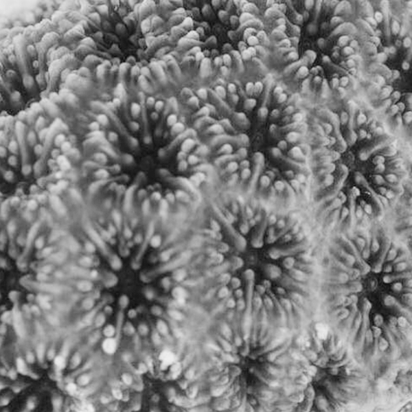
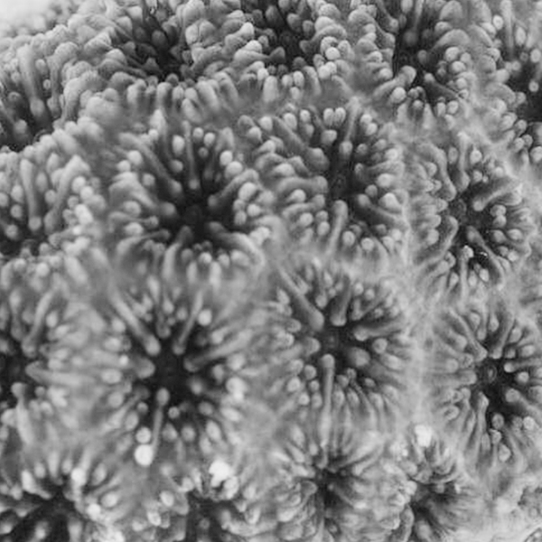
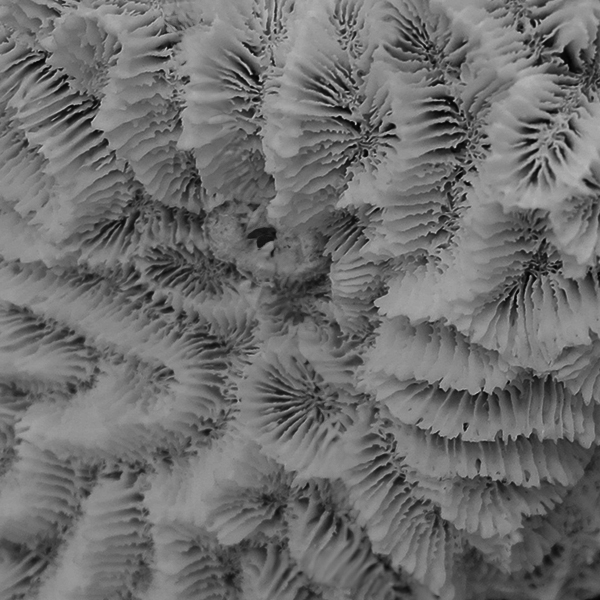
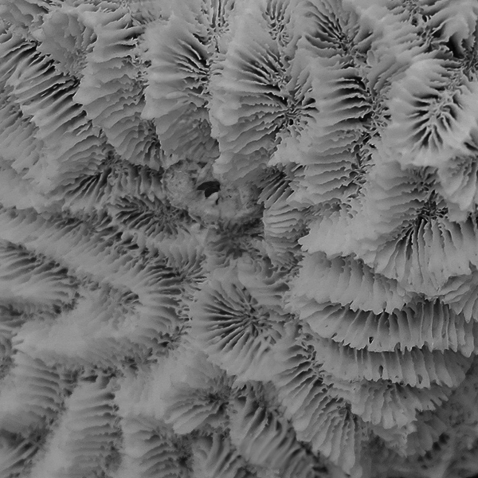
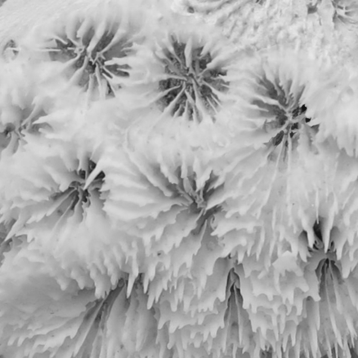
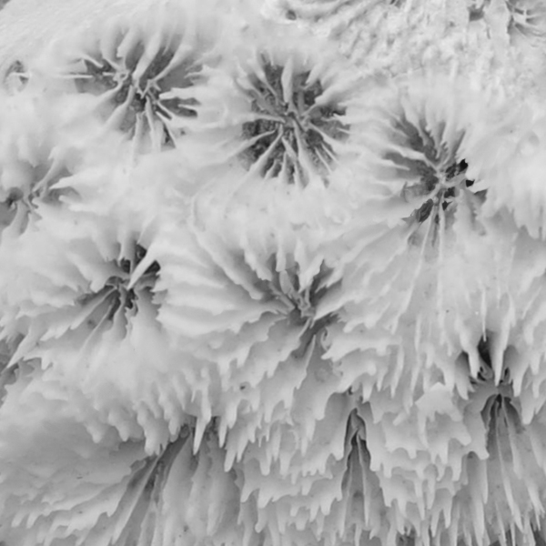

The Bleaching of
Our Coral Reefs
The Bleaching of
Our Coral Reefs
A visual exploration of coral bleaching
in the Pacific Ocean through
Smithsonian imagery


 

 



 


This project showcases the extensive and meticulously documented coral collections housed at the Smithsonian's National Museum of Natural History, one of the largest in the world. The project adopts a black-and-white aesthetic to emphasize the fragile beauty of coral reefs and remind us that these assets could fade into history if we fail to address our carbon footprint.
The Smithsonian's contributions to coral reef research and conservation are central to this narrative. Efforts like the Healthy Reefs for Healthy People Initiative monitor coral reef health, with improvements in some regions attributed to community and government interventions. The Smithsonian’s National Zoo and Conservation Biology Institute has pioneered coral cryopreservation, creating repositories containing 1 trillion frozen sperm and 3 billion larval cells from 16 species. Meanwhile, the Smithsonian Tropical Research Institute explores resilient "super corals" off Panama's coast, offering hope for the future of coral reefs.
Images used in the project are sourced from the Smithsonian, with additional data provided by NOAA and Copernicus Climate Data. Citations for the four missing coral images sourced from these databases are included for reference.